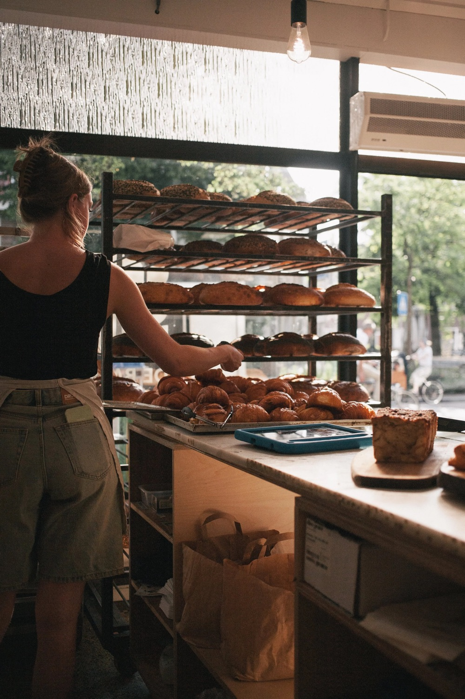
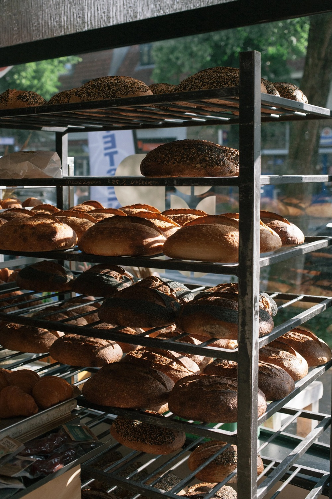
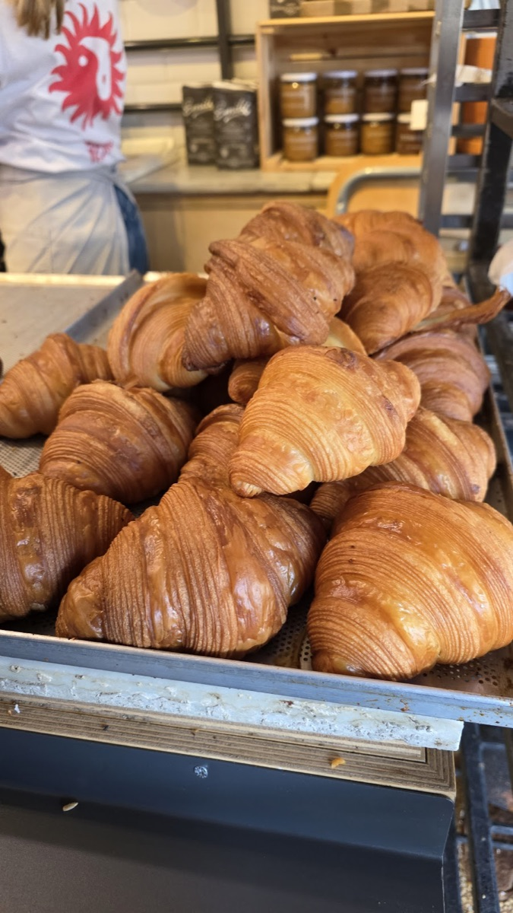
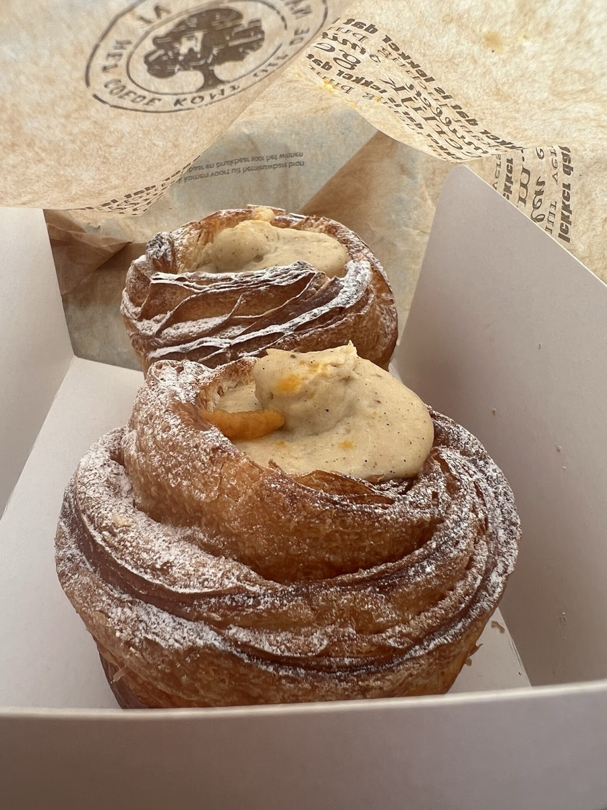
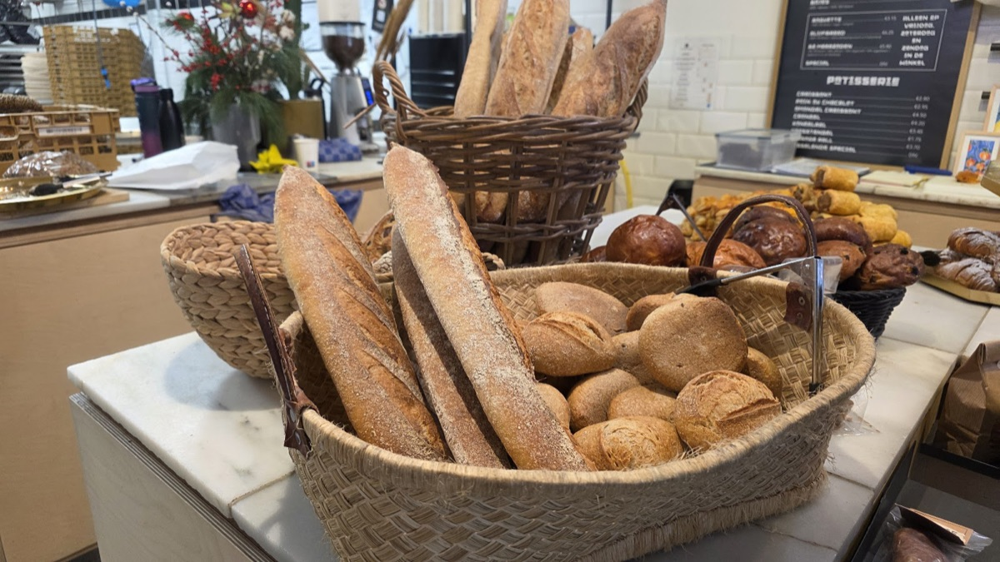
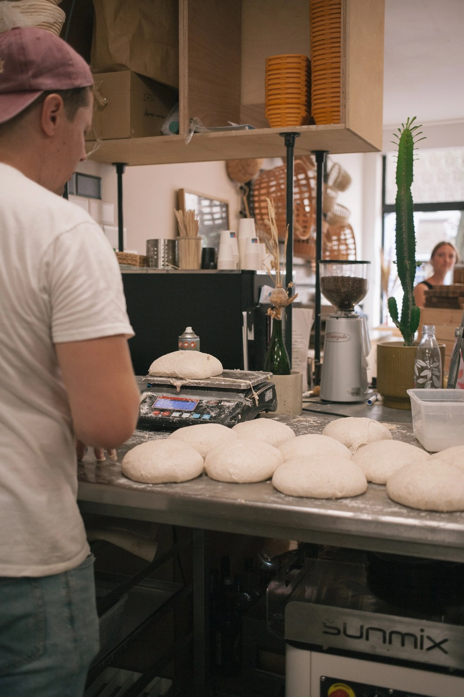
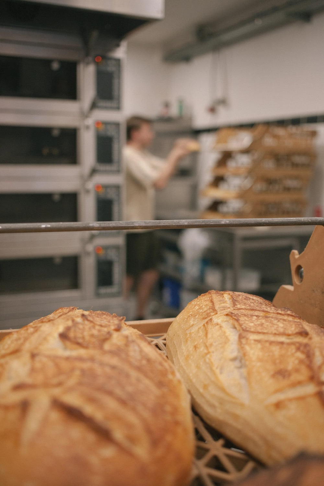
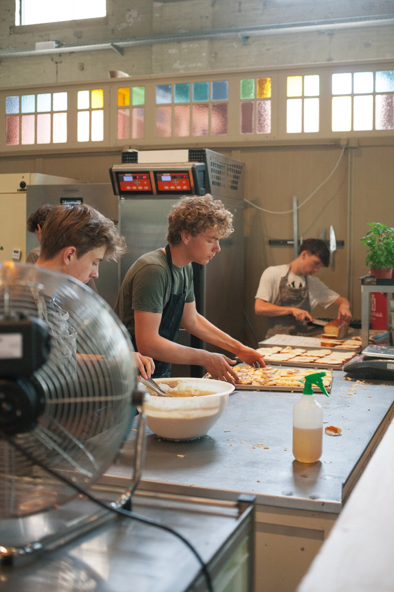

Desembakkerij in Utrecht Oost
Niet te serieus. Wel serieus goed.
Brood van alleen meel, water en zout, elke dag vers gebakken. En croissants, cruffins en goede koffie erbij.
4,8 uit 209 Google-reviews

Elke dag open vanaf acht uur.
Ook op zondag. Loop binnen op de Adriaen van Ostadelaan en je ruikt het brood al bij de deur.
De Bakkert in OostAdriaen van Ostadelaan 57
3583 AB Utrecht
Openingstijden
| Maandag | 08:00 tot 14:30 |
| Dinsdag | 08:00 tot 14:30 |
| Woensdag | 08:00 tot 14:30 |
| Donderdag | 08:00 tot 14:30 |
| Vrijdag | 08:00 tot 14:30 |
| Zaterdag | 08:00 tot 14:00 |
| Zondag | 08:00 tot 13:00 |
Wat er vandaag op de toonbank ligt.
We bakken met de seizoenen mee, dus het assortiment wisselt. Een greep uit wat je bij ons vindt.




Stokbrood, bolletjes en cinnamon rolls
Rond de feestdagen ligt er ook iets bijzonders, zoals speculaas met sinaasappel. Ligt jouw favoriet er vandaag niet? Bel even, dan hoor je wanneer wel.
Bel 06 30904886Meel, water en zout.
Van slechts drie ingrediënten kun je al iets ongelooflijk lekkers maken. Hoe bijzonder is dat?
Bij ons draait alles om smaak. We kiezen voor goede ingrediënten, zorgvuldige leveranciers en werken met de seizoenen. Soms betekent dat: dingen anders doen of net wat meer tijd nemen. Dat proef je terug.
We maken alles zelf en vertellen er graag over. Dus kom langs, proef en ontdek het zelf.


Wat de buurt ervan vindt.
4,8 uit 209 Google-reviews
“Top Bakker(t), maakt de lekkerste broden die ik ooit heb gegeten. Ik heb hier ook een broodbakcursus gedaan en ook dat kan Nils erg goed! Van zuurdesembrood tot lekkere cinnamon rolls alles smaakt top! De Bakkert is echt een ambachtelijke bakker. Hij maakt alles helemaal zelf. Brood is echt alleen meel, water en zout!”
“Suuuper lekkere cruffin en croissant hier gehaald! Echt vers en goed gevuld. Ook leuk dat ze voor de cruffinsmaken met het seizoen mee gaan. Nu hebben ze bijvoorbeeld rabarber 😍”
“Echt mega lekker, assortiment wisselt ook mee met het seizoen/feestdagen. Vandaag cruffins met pumpkin spice en een speculaas met sinasappel gescoord”
Workshop: brood bakken, de basis
Knoeien mag, leren gegarandeerd.
In één middag van "ik koop mijn brood" naar "ik bak mijn brood". Geen geheimen, wel de trucjes die het verschil maken. En je neemt alles mee naar huis.

Het programma, van 12:00 tot ongeveer 16:00
-
12:00 Meteen aan het deeg
Geen lange introductie. We zetten een No Knead-deeg op.
-
Basis en desem
Wat desem precies is, waarom je maag er blijer van wordt dan van supermarktbrood en hoe je een moederdesem levend houdt. Plus bakkerspercentages en het verschil tussen autolyse en kneden.
-
Kneden, vouwen, vormen
Handen in het deeg. Je portioneert, pre-shapet, bebloemt mandjes en oefent de vouwtechnieken.
-
± 14:15 Pauze
Handen droog, iets te eten en te drinken.
-
Bakken
Je leert desembrood insnijden zoals het hoort, met tips voor afbakken in een Dutch Oven, combisteamer of steenoven.
Eten: eet vooraf een lichte lunch. In de pauze is er iets te knabbelen.
Taal: uitleg in het Nederlands, korte toelichting in het Engels kan.
Tijd: het deeg bepaalt het tempo, dus soms loopt het wat uit.
Voucher of tegoedbon? Vink het aan bij je inschrijving.
Zin in meer?
Iets bestellen dat niet in de winkel ligt? Wat lekkers voor een feest, brood voor een groep, of gewoon veel te veel croissants op zaterdagochtend. Of wil je met ons samenwerken? Vertel wat je in gedachten hebt.
Ook voor gewone vragen ben je hier goed: openingstijden, allergenen, of dat ene brood dat er vandaag niet lag.
Je vindt ons ook hier.
-
In de Hondekop
Wisselstraat 7, Utrecht
Wo t/m zo 08:00 tot 13:30
-
Bij de Sluis
Oude Vleutenseweg 2, Utrecht
Za en zo 09:00 tot 13:30
-
In het Blauwe Huis
Statendaalder 2, Utrecht
Ma t/m vr 08:00 tot 13:30, za en zo 08:30 tot 13:30
-
In Rigoletto
Nachtegaallaan 16B, Bilthoven
Vr 11:00 tot 18:00, za 08:30 tot 17:00